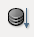

Activitats
Creació d'una consulta senzilla
L’objectiu d’aquesta activitat és aprendre a realitzar una primera consulta per familiaritzar-vos amb l’entorn d’aquest objecte de LibreOffice Base. Utilitzareu la taula Clients, que tot i ser petita en contingut, ofereix l’avantatge que podreu verificar els resultats.
Realitzareu una consulta que mostri els noms del vostres clients, el seu telèfon, la població i les observacions per facilitar la feina als agents comercials. Els passos a seguir són:
1. Obriu la base de dades
2. Seleccioneu l’opció Crear consulta en vista disseny, tal com mostra la figura
3. A la finestra de disseny, la vostra primera tasca serà escollir la taula que conté les dades amb què voleu treballar (figura).
4. Feu doble clic sobre la taula Clients.
5. Feu clic sobre el botó Tanca del quadre de diàleg Afegeix taula o consulta.
6. A la part inferior de la finestra de disseny, que anomenem graella, heu d’afegir els camps que voleu mostrar a la consulta.
En altres aplicacions de bases de dades relacionals, s’anomena quadrícula QBB a la graella.
Per fer això, cal fer clic sobre el nom del camp, mantenir premut el botó esquerre del ratolí i arrossegar fins el nom de la cel·la Camp, primera del llistat i amb fons gris.
També podeu escollir el Camp fent-hi doble clic amb el botó esquerre del ratolí.
7. Heu de repetir el pas anterior per incloure tots camps que necessiteu(figura).
- 
- Botó per executar consulta
8. Un cop dissenyada la consulta, si voleu conèixer els resultats cal que utilitzeu el botó Executar consulta (figura).
9. Observeu com la finestra de Disseny de consulta mostra un nou espai en el qual apareixen els registres de la taula que heu seleccionat.
10. Després de treballar en el disseny d’una consulta i comprovar que funciona correctament, és convenient assignar-li un nom i desar-la per si necessiteu fer-ne ús en qualsevol altra ocasió. Feu clic al botó Desa de la barra d’eines i al quadre de diàleg que apareix, escriviu el nom llista_clients.
11. Després d’aquests passos, ja podeu tancar la consulta i comprovar com apareix a la finestra principal de Base (figura).
Després de crear la consulta anterior, heu vist com el quadre de diàleg Afegeix taula o consulta permet escollir taules i/o consultes. És a dir, podeu utilitzar les dades obtingudes mitjançant una o més consultes com a origen de dades per dissenyar una nova consulta.
A la figura, s’observa com podeu escollir una taula o consulta creada de la vostra base de dades per realitzar-ne una de nova.
No podeu utilitzar el mateix nom per a una consulta i per a una taula.
Creació d'una consulta amb més d'una taula
L’objectiu d’aquesta activitat és aprendre a realitzar consultes més complexes.
Utilitzareu les taules Productes i Categoria.
Voleu saber quins articles són de les categories 1 i 4 i, d’aquesta última, quins tenen un preu inferior a 10 euros.
Procediment
- Escolliu Assistent per consultes.
- Seleccioneu les taules Productes i Categoria fent doble clic a la finestra Escollir taula.
- Veureu que les taules estan relacionades.
- Arrossegueu els següents camps a la graella de disseny: ID_Producte, Nom, PreuUnitat, i DataAlta.
- A Criteris indiqueu les categories i el preu que voleu consultar.
- Ordeneu ascendentment pel nom del producte.
- Executeu la consulta.
- Deseu la consulta amb el nom: Categoria 1 i 4 menor a 10 euros.
Explicació: heu emprat dues taules i també heu aplicat la funció or ja que tot i que al plantejament de la consulta s’indica que voleu saber els articles que pertanyen a les categories 1 i 4, no hi ha cap article que estigui en dues categories simultàniament. Per aquest motiu cal emprar or.
Podeu veure el resultat de la consulta a la figura
Podeu veure el disseny de la consulta a la figura
Creació d'una consulta amb intervals
L’objectiu d’aquesta activitat és aprendre a realitzar consultes establint intervals de cerca entre… i….
Utilitzareu la taula Clients.
Voleu saber els clients nascuts entre l’any 70 i 75.
Podeu veure el resultat de la consulta a la figura
Podeu veure el disseny de la consulta a la figura
Explicació: en aquest cas heu emprat una taula i també heu utilitzat el paràmetre entre i i per establir una determinada franja de temps.
Creació d'una consulta amb funcions
L’objectiu d’aquesta activitat és aprendre a realitzar consultes utilitzant funcions.
Utilitzareu la taula Articles.
Voleu saber la mitjana de preus dels vostres productes.
Podeu veure el resultat de la consulta a la figura
Podeu veure el disseny de la consulta a la figura
Explicació: en aquest cas heu emprat una taula i heu utilitzat la funció Mitjana. Fixeu-vos que el format del resultat és del tipus moneda.
Creació d'una consulta amb totals
L’objectiu d’aquesta activitat és aprendre a realitzar consultes establint criteris d’agrupació i totals.
Voleu saber el brut total de cada comanda rebuda. Utilitzareu la taula Detall_comanda. A la pantalla de disseny de la consulta escolliu la taula i seleccioneu el camp IdComanda. Definiu un nou camp calculat a partir de l’operació quantitat × preu, tal com mostra la figura figura. Podeu veure el resultat de la consulta a la figura.
Podeu veure el disseny de la consulta a la figura.
Explicació: en aquest cas heu emprat una taula i heu utilitzat les funcions de total i agrupament de dades.
Creació d'una consulta amb paràmetres
L’objectiu d’aquesta activitat és aprendre a realitzar consultes establint una pregunta cada cop que s’executa la consulta.
Utilitzareu la taula Comandes i Clients.
Voleu saber les comandes què han fet els vostres clients i si s’han lliurat o no.
Podeu veure el resultat de la consulta a la figura.
Podeu veure el disseny de la consulta a la figura.
Explicació: en aquest cas heu emprat el criteri ? de manera que cada cop que s’executa la consulta s’obre una finestra per indicar la informació del client que es vol consultar. Aquest tipus de consultes són molt útils ja que permeten fer consultes puntuals sense necessitat d’anar-les desant d’una en una. Permeten molta agilitat i no sobrecarreguen les bases de dades de consultes.
Creació d'una consulta de totals
L’objectiu d’aquesta activitat és aprendre a realitzar consultes amb més d’una taula i establint criteris d’agrupació i totals.
Utilitzareu les taules Comandes i Clients.
Voleu saber quantes comandes ha fet cada client.
Podeu veure el resultat de la consulta a la figura
Podeu veure el disseny de la consulta a la figura